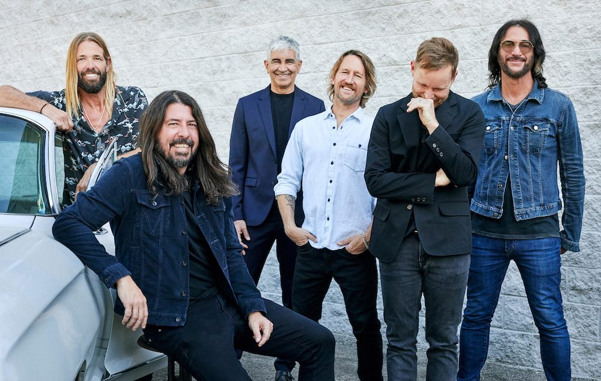
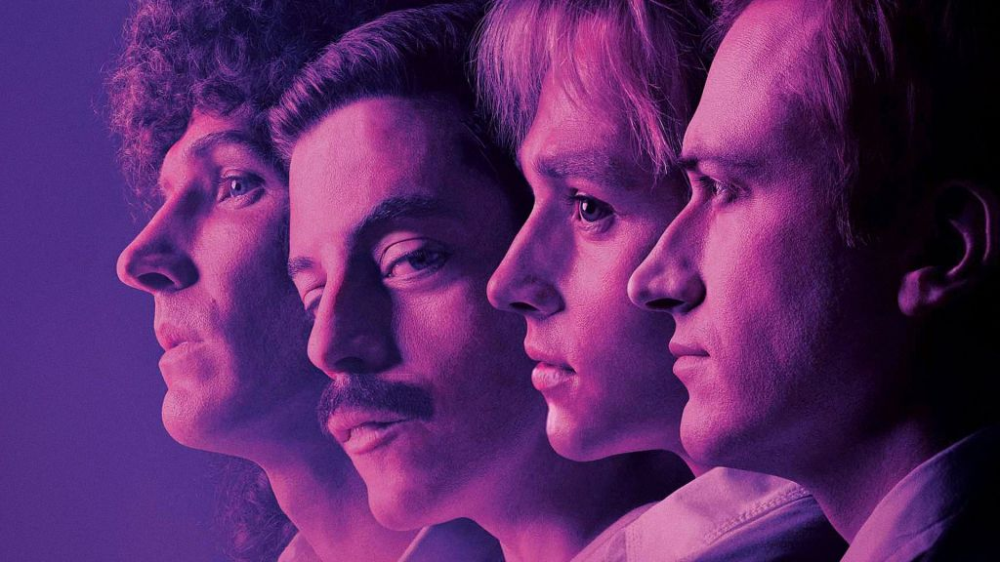

Red Hot Chili Peppers (часто используется аббревиатура RHCP; с англ. — «Красные острые перцы чили») — американская рок-группа, образованная в 1983 году в Калифорнии вокалистом Энтони Кидисом, басистом Майклом Бэлзари (больше известным как Фли), гитаристом Хиллелом Словаком и барабанщиком Джеком Айронсом.
Foo Fighters — американская рок-группа, образованная бывшим участником Nirvana Дейвом Гролом в 1994 году.
Программирую на острове.
«Евге́ний Оне́гин» — роман в стихах русского писателя и поэта Александра Сергеевича Пушкина, написанный в 1823—1830 годах, одно из самых значительных произведений русской словесности.
«Преступление и наказание» — социально-психологический и социально-философский роман Фёдора Михайловича Достоевского, над которым писатель работал в 1865—1866 годах.
«Звёздные войны» — медиафраншиза в жанре космическая опера, включающая в себя 11 художественных фильмов (9 эпизодов основной саги, также известна как «Сага Скайуокеров» и 2 фильма «историй»)
«Богемская рапсодия» (англ. Bohemian Rhapsody) — американо-британский биографический фильм о британской рок-группе Queen, сосредоточенный на жизни вокалиста Фредди Меркьюри вплоть до концерта группы на фестивале Live Aid.